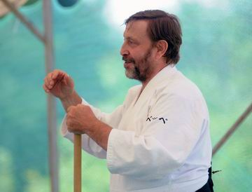

| INICIO | CLASES | TÉCNICAS | VIDEOS | SALUD | SEMINARIO | ORGANIZACIONES | HISTORIA | TEXTOS | BIBLIOGRAFÍA | LINKS |
6o Seminario Internacional
Ki Aikido Buenos Aires 2012

El 6º Seminario Internacional - Ki Aikido - Buenos Aires - 2012 se desarrollará en la Facultad de Ciencias Exactas y Naturales (SEGB - Deportes) - Dojo Universidad de Buenos Aires, entre los días 31 de Agosto y 2 de Setiembre de 2012 y será brindado por Shihan Giuseppe Ruglioni, 7o Dan de la Ki No Kenkyukai Association Internationale, en el gimnasio del 1er piso del Pabellón II de Ciudad Universitaria.
Los horarios serán:
Viernes 31/8
Clase General..........: 09:30 a 12:00 hs.
Clase Instructores......:12:00 a 13:00 hs.
Clase Instructores.......:16:00 a 17:00 hs.
Clase General............:17:00 a 18:30 hs.
Clase General............:18:45 a 19:45 hs.
Sábado 1/9
Misogi.......................:08:00 a 08:45 hs.
Clase General...........:09:00 a 11:00 hs.
Clase Instructores.....:11:00 a 12:00 hs.
Exámenes de Ki.....................:12:00 hs.
Clase Instructores.....:16:00 a 17:00 hs.
Clase General...........:17:00 a 18:30 hs.
Clase General..........:18:45 a 19:45 hs.
Domingo 2/9
Misogi.....................:08:00 a 08:45 hs.
Clase General.........:09:00 a 11:00 hs.
Clase Instructores....:11:00 a 12:00 hs.
Exámenes de Aikido............:12:00 hs.
Break...................................:13:00 hs.
Clase Instructores...:13:30 a 14:30 hs.
Clase General.........:14:30 a 16:00 hs.
Lunch (compartido).............:16:00 hs.
Valor del Seminario Completo: $500.-
Por 2 dias de seminario: $400.-
Por 1 dia de seminario: $300.-
Organizado por: Dojo Universidad de Buenos Aires.
Para mas información contacte a: Norberto Kiman
norbertokiman@hotmail.com
Se solicita:
- Puntualidad en el ingreso a las clases.
- Apagado de celulares.
- Clases de Instructores para 1eros Kyu en adelante.

Grupo Seminario 2012